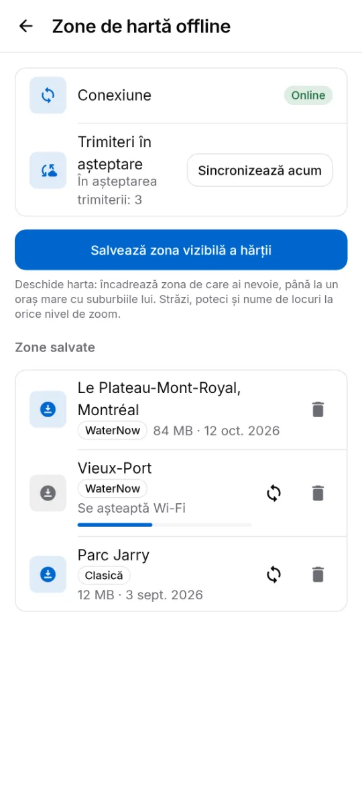

Montreal · Québec, Canada
Găsește apă și toalete gratuite în Montreal
Portul Vechi, Mont Royal, Plateau, canalul Lachine: oriunde ai merge, WaterNow îți arată punctele de apă și toaletele gratuite din jurul tău și te ghidează până la ele.
Descarcă pentru Android- Gratuit
- Fără reclame
- Fără cont

De ce WaterNow
Gratuit
Harta, căutarea, traseele și hărțile offline sunt gratuite, pentru totdeauna.
Fără reclame
Nicio reclamă, nicăieri în aplicație.
Fără cont
Ca invitat poți explora harta, planifica trasee și nota reumplerile.
Funcționează offline
Salvează-ți orașul: harta și punctele ei funcționează fără conexiune.
Ghidare pas cu pas
Pe jos, cu bicicleta sau cu mașina, cu o voce care anunță fiecare viraj.
Accesibil și prietenos cu câinii
Filtre care arată doar punctele accesibile sau pe cele cu apă pentru câinele tău.
7 limbi
Română, engleză, franceză, spaniolă, germană, portugheză și japoneză.
Confidențialitate înainte de toate
Fără trackere. Locația ta servește la găsirea apei din jurul tău și îți poți exporta sau șterge datele oricând.
O privire în aplicație


Cum funcționează
Descarcă aplicația
Gratuită, pentru Android, direct de pe acest site.
Deschide-o, cu sau fără cont
Continuă ca invitat sau creează un cont: tu alegi.
Lasă-te ghidat
Alege un punct de apă sau o toaletă din jurul tău și urmează ghidarea.
Întrebări frecvente
WaterNow e gratuit?
Da. Harta, căutarea, traseele și hărțile offline sunt gratuite, fără reclame. Există și funcții suplimentare opționale, dar tot ce e util rămâne gratuit.
Am nevoie de un cont?
Nu. Ca invitat poți explora harta, planifica trasee și nota reumplerile. Cu un cont poți adăuga și puncte, recenzii și fotografii.
Funcționează offline?
Da. Salvează zona de care ai nevoie, până la un oraș mare și împrejurimile lui: harta și punctele ei funcționează apoi fără conexiune.
Pe ce telefoane merge?
Pe Android. Butonul descarcă aplicația direct de pe acest site, iar Android îți cere să permiți instalarea.
Ți-e sete în Montreal?
Descarcă WaterNow și vezi apa și toaletele gratuite din jurul tău.
Descarcă pentru Android